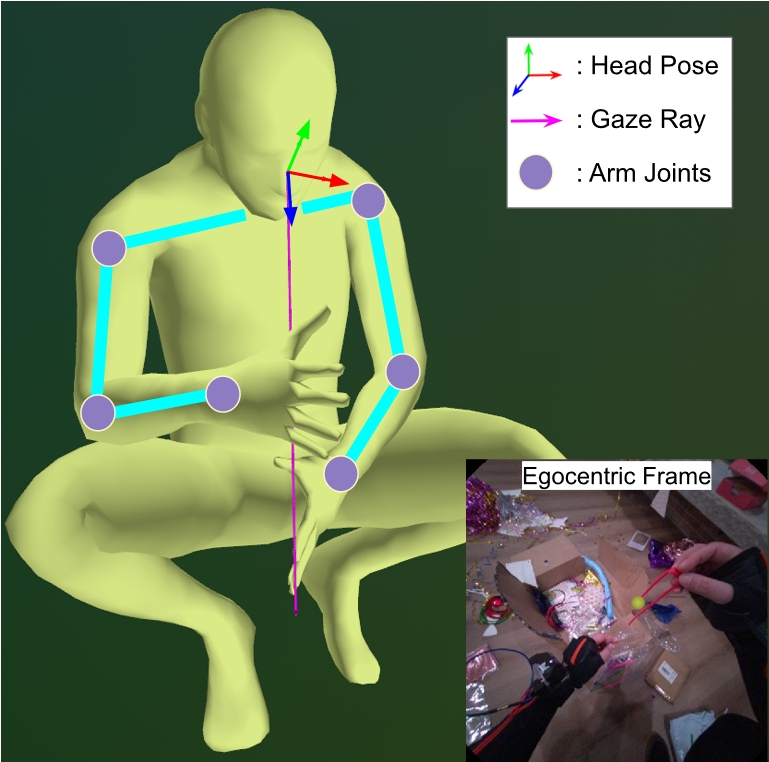
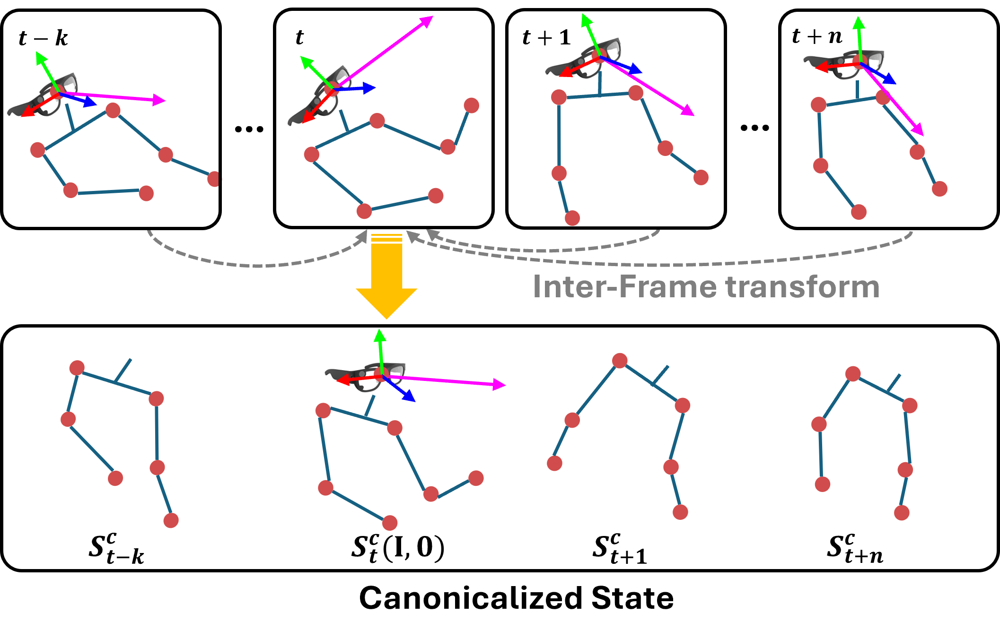
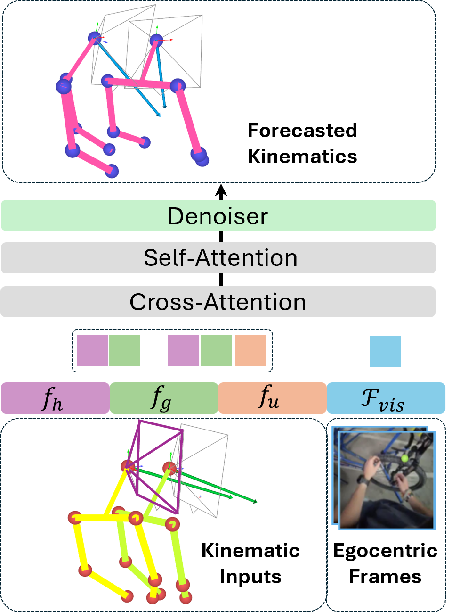

A precise turn with head and gaze fixed on the bike tire.
At each timestep, the visuomotor state is defined as St = {Ht, Gt, Ut}, where Ht is head pose, Gt is the 3D gaze endpoint, and Ut denotes upper-body joint positions.
Understanding and predicting human visuomotor coordination is crucial for applications in robotics, human-computer interaction, and assistive technologies. Our work introduces a forecasting-based task for visuomotor modeling, where the goal is to predict head pose, gaze, and upper-body motion from egocentric visual and kinematic observations.
We propose a Visuomotor Coordination Representation (VCR) that learns structured temporal dependencies across these multimodal signals. We extend a diffusion-based motion modeling framework that integrates egocentric vision and kinematic sequences, enabling temporally coherent and accurate visuomotor predictions.
Our approach is evaluated on the large-scale EgoExo4D dataset, demonstrating strong generalization across diverse real-world activities. Our results highlight the importance of multimodal integration in understanding visuomotor coordination, contributing to research in visuomotor learning and human behavior modeling.

At each timestep, the visuomotor state is defined as St = {Ht, Gt, Ut}, where Ht is head pose, Gt is the 3D gaze endpoint, and Ut denotes upper-body joint positions.

Visuomotor states are aligned to the reference frame of the last observed head pose, allowing the model to learn relative motion patterns independent of global movement.

Kinematic features and egocentric visual embeddings are fused through structured head-gaze and head-gaze-arm pathways, then processed by a temporal encoder and diffusion denoiser to forecast future visuomotor states.
Predicted visuomotor coordination across diverse real-world activities from EgoExo4D. Each demo visualizes the coupled evolution of head pose, 3D gaze endpoints, and upper-body motion.
Attention shifts and returns during the health-related task.
@inproceedings{jia2026learning,
title={Learning predictive visuomotor coordination},
author={Jia, Wenqi and Lai, Bolin and Cao, Xu and Liu, Miao and Xu, Danfei and Rehg, James M},
booktitle={Proceedings of the IEEE/CVF Conference on Computer Vision and Pattern Recognition},
pages={3609--3619},
year={2026}
}